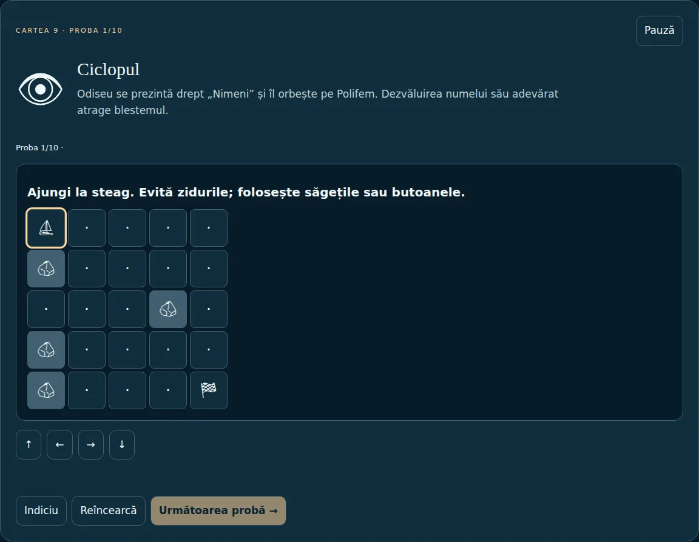
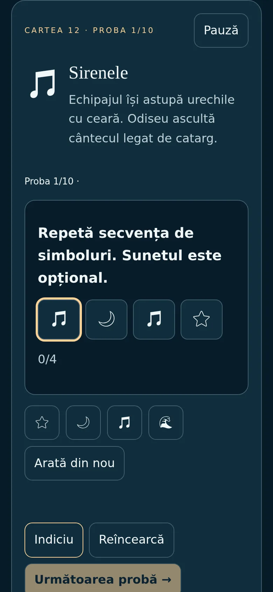

O aventură educativă despre călătoria lui Odiseu: 12 insule, 120 de probe și 11 moduri de joc, în română și engleză. Merge offline, se instalează ca aplicație și nu are server, conturi sau dependențe la rulare. Studiul arată cum un quiz cu 12 întrebări a devenit un joc complet, fără să pierd din vedere accesibilitatea și datele jucătorului.
Ecranul de start, cu progresul jucătorului și harta simbolică a celor 12 insule.
120probe progresive, din 12 mecanici diferite
11moduri de joc, de la Poveste la Duo și Atelier
0server, conturi, tracking sau dependențe la rulare
33 KBtot codul, comprimat (HTML, CSS, JS)
Contextul
Versiunea 1.0 era un singur fișier HTML: 12 întrebări despre Odiseea, o hartă simbolică, RO/EN și temă luminoasă/întunecată. Funcționa, dar era un quiz. Am vrut ca fiecare insulă să se joace altfel, ca jocul să fie accesibil și pentru cine nu poate reacționa rapid, iar progresul să rămână al jucătorului, fără cont.
Deciziile importante
120 de probe fără 120 de niveluri scrise de mână
Provocarea: 120 de probe scrise individual ar fi fost greu de întreținut și imposibil de testat complet.
Soluția: 12 mecanici (perechi, labirint, vânt, culoare sigur, ingrediente, profeție, secvență, curenți, provizii, plută, cronologie, arc), fiecare cu 10 variații deterministe. Aceeași probă, dificultate și „sămânță” dau mereu același puzzle, așa că doi jucători pot primi exact aceleași probe, iar testele pot verifica toate cele 360 de variante.
Niciun moment în care trebuie să fii rapid
Provocarea: multe jocuri pun presiune pe timp de reacție, ceea ce exclude jucătorii cu dizabilități motorii.
Soluția: toate jocurile sunt pe ture. Timerul e oprit implicit; dacă e pornit, se poate pune pe pauză, prelungi, și se suspendă singur când tabul e ascuns sau setările sunt deschise. Chiar și arcul din Itaca se țintește cu butoane sau slider, nu cu reflexe.
Recompense care nu se pot „farma”
Provocarea: dacă rejucarea unei probe dă din nou scoici, magazinul își pierde sensul.
Soluția: fiecare recompensă are un ID legat de probă, mod, sămânță și rundă. O probă din Poveste se plătește o singură dată; magazinul acceptă doar scoici câștigate, fără plăți și fără cont.
Datele stau la jucător, dar se pot muta
Provocarea: fără server, progresul trăiește doar în browser și se poate pierde sau strica.
Soluția: trei profiluri locale, backup JSON validat strict la import, respingerea fișierelor corupte și migrarea automată a progresului din v1. În 2.1, backupul se poate transfera direct între dispozitive, doar după „Trimite” pe unul și „Acceptă” pe celălalt.
Duel între două dispozitive, fără server propriu
Provocarea: un mod multiplayer cere de obicei un backend, conturi și costuri.
Soluția: conexiune WebRTC directă, cu coduri schimbate manual printr-un canal privat. Gazda invită partenerul la aceleași probe, cu aceeași dificultate. Fără server TURN, unele rețele blochează legătura, iar jocul explică asta clar și propune alternativa: aceeași rețea Wi-Fi sau export/import JSON.
Literatură și ficțiune, separate cinstit
Provocarea: un joc „inspirat din Odiseea” poate amesteca ușor povestea reală cu invenții.
Soluția: harta poate fi parcursă în ordinea călătoriei sau în ordinea în care poemul o povestește (cărțile 9–12 sunt retrospective). Modul „Ce-ar fi dacă?” și cele cinci alegeri narative din 2.1 sunt marcate explicit ca ficțiune și nu se amestecă cu progresul probelor.
Cum arată o probă

Ciclopul: labirint pe grilă, cu săgeți de la tastatură sau butoane.

Sirenele, pe un ecran de 390 px.
Ce am construit
Joc
11 moduri: Poveste, Explorare liberă, Călătorie scurtă, Daily Quest, Challenge, Campionat local, Zen, Quiz literar, Navigator, Doi jucători (duel sau cooperare pe același dispozitiv) și Atelier.
Atelierul povestitorului: jucătorul își scrie propriile întrebări bilingve și rute de insule, validate înainte de joc și afișate doar ca text, nu ca HTML.
Expediții săptămânale și zilnice, calculate pe fusul orar București, cu arhivă jucabilă.
Jurnal de bord, glosar de personaje, insigne, artefacte și trei stiluri de corabie cumpărate cu scoici.
Accesibilitate
Tot jocul merge din tastatură, cu focus vizibil și link „Sari la joc”.
Scanare automată pentru switch: evidențierea trece singură între butoane, iar Space sau Enter confirmă.
Contrast ridicat, text la 100/115/130%, mișcare redusă, ecran simplificat și limbaj pentru copii.
Gesturile swipe din labirint au mereu echivalent în butoane; sunetul și vibrația sunt opționale.
Tehnic
JavaScript simplu, fără framework: motorul de joc (engine.js) e separat de interfață, deci poate fi testat în Node, fără browser.
PWA cu service worker limitat la folderul jocului și cache pe versiuni; actualizarea nu întrerupe o partidă.
O ediție HTML complet autonomă, generată de un script Python fără dependențe, care merge deschisă direct de pe disc.
Fonturi de simboluri găzduite local (Noto Emoji, licență OFL), fără cereri către servicii externe.
Testare
Motor: toate cele 120 de tranziții de progres, recompense repetate, magazin, 360 de variante de puzzle, validarea backupului, migrarea v1 și limitele de dată.
Browser (Playwright, Chromium): toate cele 120 de probe rezolvate prin butoanele reale, toate modurile, profiluri, preferințe, pauză, timer, export/import, offline și layout la 390 și 320 px cu text la 130%.
Accesibilitate: scan axe-core WCAG 2.1 AA fără erori în vederea de joc.
Mod conectat: alegeri, finaluri, duel WebRTC între două pagini și transfer de backup acceptat.
Ce nu este încă verificat
Duelul WebRTC a fost testat între două browsere pe același calculator, nu între rețele diferite. Cititoarele de ecran reale (TalkBack, VoiceOver), un switch fizic, instalarea pe Android și sunetul pe toate browserele cer încă testare pe dispozitive. Scanul axe nu înseamnă certificare completă de accesibilitate.
Evoluția
1.0
2.0
2.1
Conținut
12 întrebări
120 de probe, 12 mecanici
+ 5 alegeri narative cu finaluri
Moduri
1
11
+ duel între dispozitive
Progres
Local, un profil
3 profiluri, backup validat, migrare
+ transfer direct între dispozitive
Offline
Fișier unic
PWA + ediție autonomă
La fel
Feedback
Nu
Păreri salvate local
+ issue GitHub, trimis de jucător
Teste
Manuale
Motor + 120 de probe în browser
+ teste pentru modul conectat
Ce urmează
Testarea duelului între rețele diferite și pe telefoane reale.
Sesiuni cu TalkBack și VoiceOver, ca ordinea de citire să fie verificată de oameni, nu doar de unelte.
Observarea unor jucători reali, ca dificultatea să se bazeze pe date, nu pe presupuneri.
Case study · Learning game · Accessibility
Odyssey Quest
A learning adventure about Odysseus’s voyage: 12 islands, 120 trials and 11 game modes, in Romanian and English. It works offline, installs as an app and has no server, accounts or runtime dependencies. This case study shows how a 12-question quiz became a full game while keeping accessibility and the player’s data in focus.
The start screen, with the player’s progress and the symbolic map of the 12 islands.
120progressive trials from 12 different mechanics
11game modes, from Story to Duo and Workshop
0servers, accounts, tracking or runtime dependencies
33 KBall code, compressed (HTML, CSS, JS)
Context
Version 1.0 was a single HTML file: 12 questions about the Odyssey, a symbolic map, RO/EN and light/dark themes. It worked, but it was a quiz. I wanted every island to play differently, the game to be accessible to people who cannot react quickly, and progress to belong to the player, with no account.
Key decisions
120 trials without 120 hand-written levels
Challenge: 120 individually written trials would be hard to maintain and impossible to test fully.
Solution: 12 mechanics (pairs, maze, wind, safe lane, ingredients, prophecy, sequence, currents, supplies, raft, chronology, bow), each with 10 deterministic variations. The same trial, difficulty and seed always give the same puzzle, so two players can get identical trials and tests can check all 360 variants.
Nothing ever requires speed
Challenge: many games pressure reaction time, which excludes players with motor disabilities.
Solution: every game is turn-based. The timer is off by default; when on, it can be paused or extended, and it suspends itself when the tab is hidden or settings are open. Even the bow at Ithaca is aimed with buttons or a slider, not reflexes.
Rewards that cannot be farmed
Challenge: if replaying a trial pays shells again, the shop loses its meaning.
Solution: each reward has an ID tied to trial, mode, seed and round. A Story trial pays once; the shop accepts only earned shells, with no payments and no account.
Data stays with the player, but can move
Challenge: without a server, progress lives only in the browser and can be lost or corrupted.
Solution: three local profiles, a JSON backup strictly validated on import, rejection of corrupt files and automatic migration of v1 progress. In 2.1, a backup can move directly between devices, only after “Send” on one and “Accept” on the other.
A duel between two devices, with no server of my own
Challenge: multiplayer usually needs a backend, accounts and running costs.
Solution: a direct WebRTC connection, with codes exchanged manually through a private channel. The host invites the partner to identical trials at the same difficulty. Without a TURN server some networks block the link, and the game says so plainly and offers the alternative: the same Wi-Fi network or JSON export/import.
Literature and fiction, honestly separated
Challenge: a game “inspired by the Odyssey” can easily blur the real story with invention.
Solution: the map can follow the voyage order or the order in which the poem tells it (Books 9–12 are a flashback). The “What if?” mode and the five narrative choices in 2.1 are explicitly marked as fiction and kept apart from trial progress.
What a trial looks like
The Cyclops: a grid maze, played with arrow keys or buttons (Romanian interface).The Sirens, on a 390 px screen.
What I built
Game
11 modes: Story, Free exploration, Short voyage, Daily Quest, Challenge, Local tournament, Zen, Literary quiz, Navigator, Two players (duel or cooperation on one device) and Workshop.
Storyteller’s workshop: players write their own bilingual questions and island routes, validated before play and rendered as text, never as HTML.
Weekly and daily expeditions, computed in the Bucharest time zone, with a playable archive.
Ship’s log, character glossary, badges, artifacts and three ship styles bought with shells.
Accessibility
The whole game works from the keyboard, with visible focus and a “Skip to game” link.
Automatic switch scanning: the highlight moves between buttons by itself and Space or Enter confirms.
High contrast, 100/115/130% text, reduced motion, simplified screen and child-friendly wording.
Maze swipes always have button equivalents; sound and vibration are opt-in.
Technical
Plain JavaScript, no framework: the game engine (engine.js) is separate from the interface, so it can be tested in Node without a browser.
A PWA with a service worker scoped to the game folder and versioned caches; updates never interrupt a game in progress.
A fully self-contained HTML edition, generated by a dependency-free Python script, that opens straight from disk.
Locally hosted symbol fonts (Noto Emoji, OFL licence), with no requests to outside services.
Testing
Engine: all 120 progress transitions, repeated rewards, shop, 360 puzzle variants, backup validation, v1 migration and date boundaries.
Browser (Playwright, Chromium): all 120 trials solved through the real buttons, every mode, profiles, preferences, pause, timer, export/import, offline and layout at 390 and 320 px with 130% text.
Accessibility: axe-core WCAG 2.1 AA scan with zero violations in the game view.
Connected mode: choices, endings, WebRTC duel between two pages and an accepted backup transfer.
What is not verified yet
The WebRTC duel was tested between two browsers on the same computer, not across different networks. Real screen readers (TalkBack, VoiceOver), a physical switch, Android installation and audio across browsers still need device testing. An axe scan is not a full accessibility certification.
How it evolved
1.0
2.0
2.1
Content
12 questions
120 trials, 12 mechanics
+ 5 narrative choices with endings
Modes
1
11
+ device-to-device duel
Progress
Local, one profile
3 profiles, validated backup, migration
+ direct device transfer
Offline
Single file
PWA + self-contained edition
Same
Feedback
None
Opinions saved locally
+ GitHub issue, submitted by the player
Tests
Manual
Engine + 120 trials in the browser
+ connected-mode tests
What’s next
Testing the duel across different networks and on real phones.
Sessions with TalkBack and VoiceOver, so reading order is checked by people, not only by tools.
Watching real players, so difficulty rests on evidence rather than assumptions.